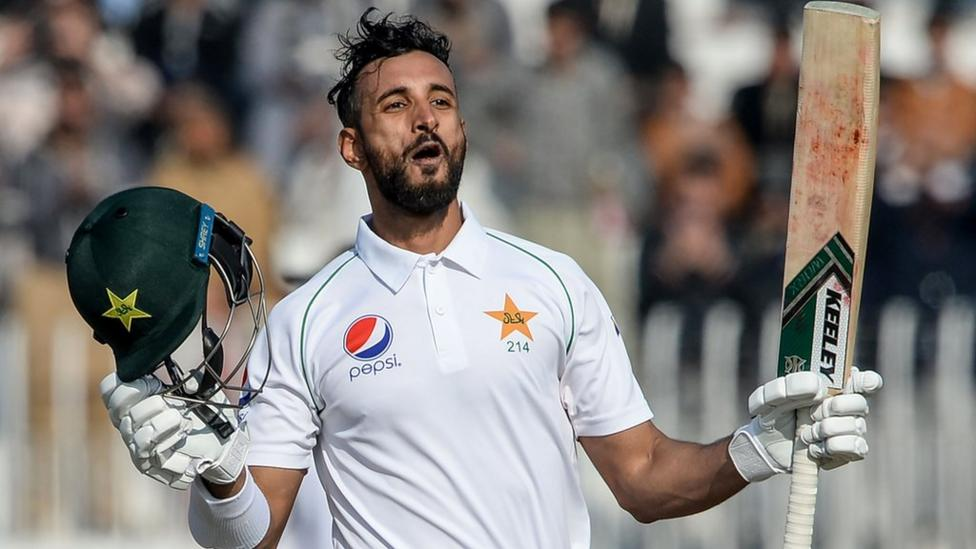
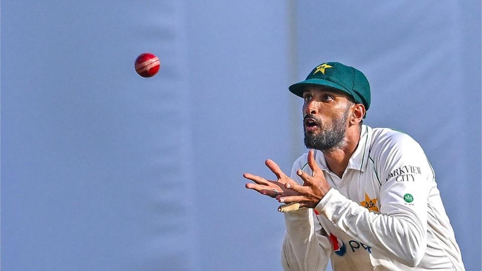

>> Shan Masood: New Pakistan captain faces tough baptism in Australia

- Shan Masood's appointment as the new Pakistan Test captain ended weeks of commotion.
- It was certainly not how a player wants to be handed the reins: the build-up laced with drama that only the Pakistan
Cricket Board (PCB) is capable of scripting.
- It all began with a press release that threw incumbent captain Babar Azam and Inzamam-ul-Haq, the then chief selector,
under the bus after a historic World Cup defeat by Afghanistan in Chennai.
- Then came 15 November - the day the PCB put out three press releases in less than an hour to announce Azam had stepped
down voluntarily, Shan Masood and Shaheen Afridi were the new Test and T20 captains, and Mohammad Hafeez had replaced
Mickey Arthur as team director.
- Throughout that period there were recriminations for other PCB officials too, following Pakistan's poor showing at the
World Cup in India.
- A three-Test tour of Australia is next for Pakistan, and all with a new leader.
- Popular Masood a 'very good tactician'
- Masood is widely regarded as one of the most astute cricketers in the current Pakistan set-up.
- His fitness levels and work ethic are exemplary, and he is considered one of the nicest people to be around.

- However, despite making his Test debut a little over a decade ago, Masood has struggled to become a permanent fixture in
the Test side - only doing so last winter in the series against England.
- His 30 Tests to date have seen him accumulate 1,597 runs at a meagre average of 28.51.
- Babar, despite not being known as an astute captain, was handed the reins of Pakistan's limited-overs sides in 2019 and
then the Test side in 2020 based on his prolific batting.
- "I believe there are two roles for a captain," says Mickey Arthur, who as head of cricket at Derbyshire signed Masood
last summer.
Source : Click
here